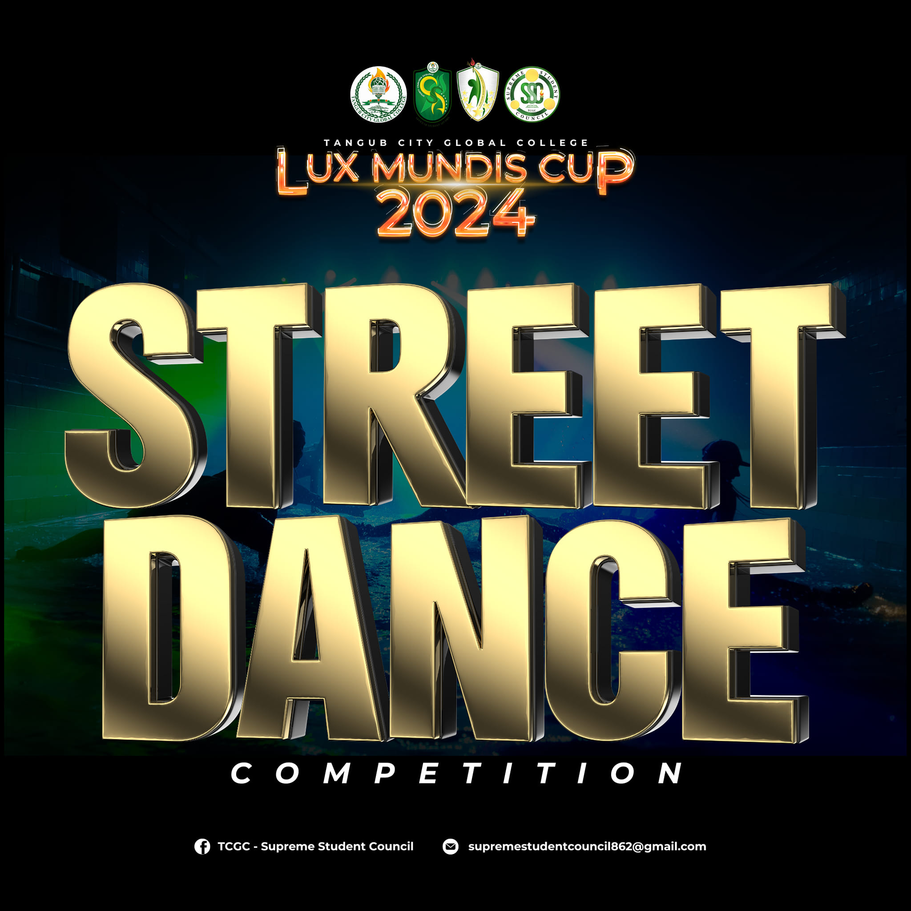
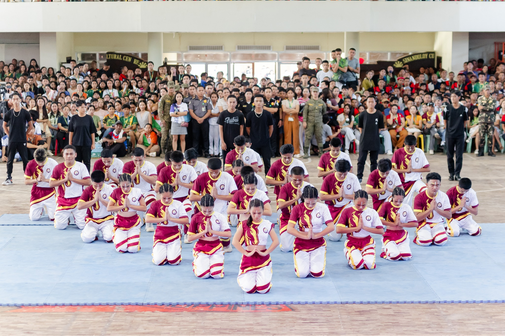

Though DanceSport isn’t yet part of the Olympics,
it is recognized by the International Olympic
Committee and is a featured event in the World
Games,
which brings together non-Olympic sports
. And for many dancers, the dream is to see it
included in the Olympics someday.

MOBILE LEGENDS
What’s also amazing about Mobile Legends Esports is its community.
The game has become a cultural movement, uniting players
from all walks of life.
Fans flock to arenas, cheering on their favorite teams,
while millions more watch from home, following the action on platforms
like YouTube and Twitch.
The energy is palpable, and the stakes are high.
Every play, every kill, every tower destroyed, is a moment of
glory that could lead to the ultimate prize.


Cheerdance
Cheerdance is more than just a performance sport.
It’s about lifting spirits, bringing people together, and
representing your school with heart and energy.
At TCGC,
our cheerdance team embodies the essence of unity, dedication,
and school pride. We come together as one,
combining
athleticism with artistry to create routines
that dazzle, energize, and inspire.